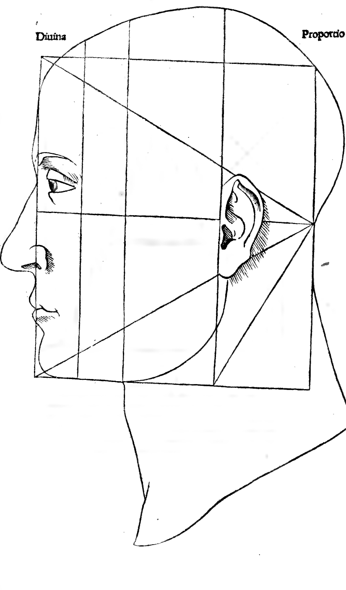
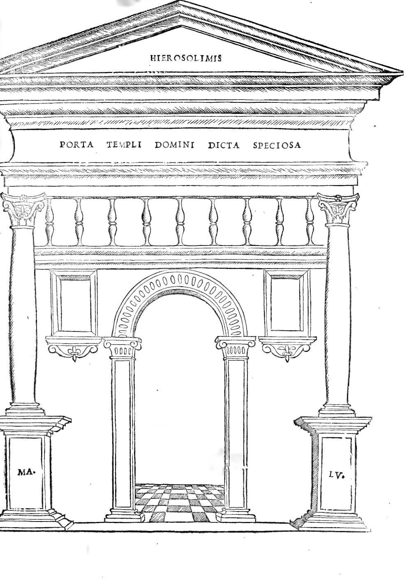
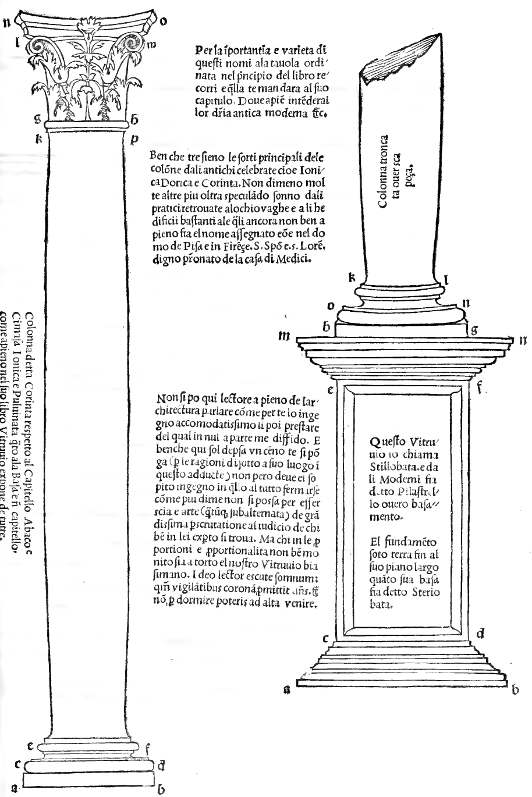
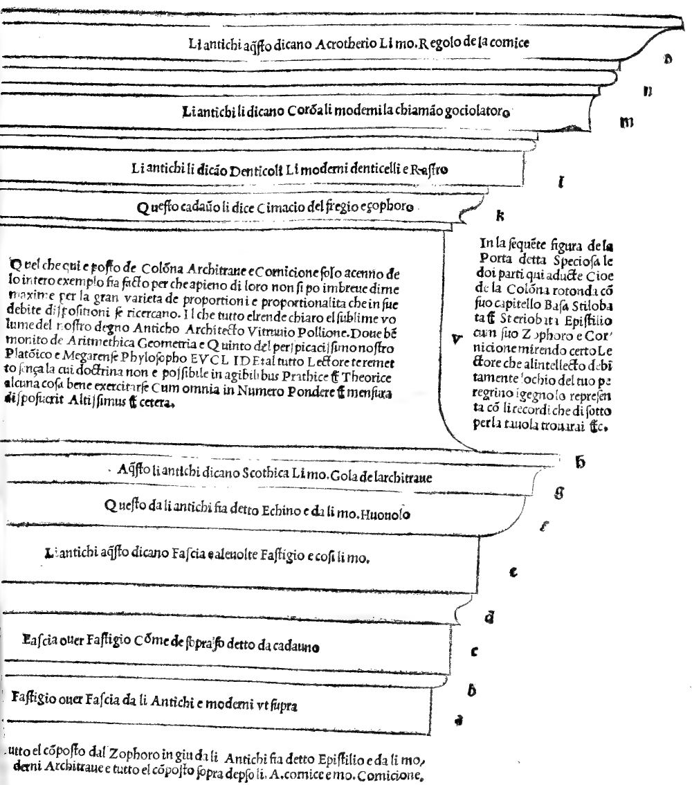
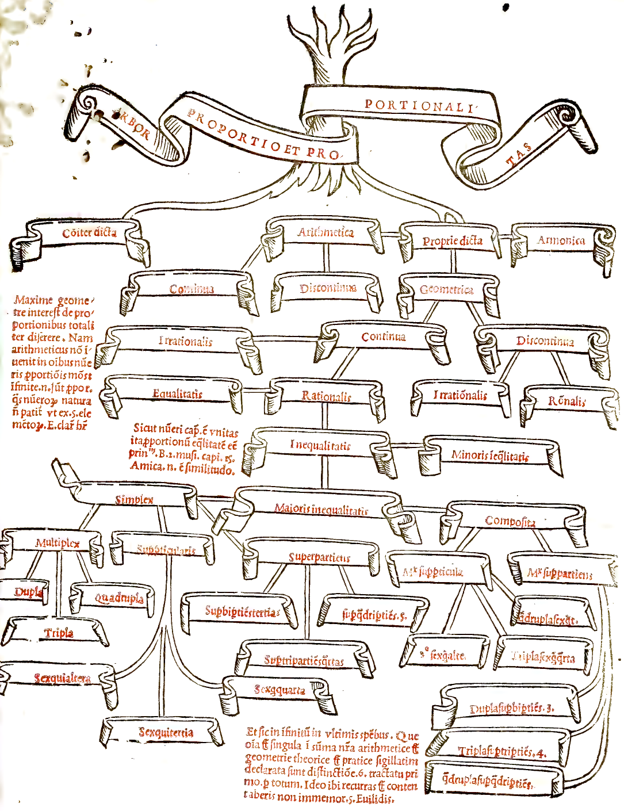

Anhang II: Architekturtafeln und Arbor Proportionis¶
Menschliches Profil, Porta Speciosa, Korinthisch-Ionische Säule, Gebälk und Stammbaum der Proportionen (1889)
Folio 0137: Divina Proportio — Caput Humanum (Proportional Profile of the Human Head)¶

Divina Proportio — Caput Humanum (Proportional Profile of the Human Head)¶
Divina Proportio. Proportionale Construction des menschlichen Kopfes im Dreieck- und Quadratnetz (Tractat über die Architektur, Cap. I–II).
Folio 0185: Porta Templi Domini Dicta Speciosa¶

PORTA TEMPLI DOMINI DICTA SPECIOSA.
Hinsichtlich der Figur des „Speciosa“ genannten Thores des Tempels Salomonis und der hier vorgeführten beiden Theile: nämlich der runden Säule mit ihrem Capitäl, Basis, Stilobat und Stereobat, Epistil mit seinem Zophoros und Karnies, bin ich sicher, Leser, dass das Auge deines bewanderten Geistes es in richtiger Weise dem Verständniss vorführe.
Folio 0213: Colonna Corinta, Jonica e Pulvinata con Stilobata e Steriobata¶

Colonna Corinta, Jonica e Pulvinata con Stilobata e Steriobata¶
Säule, korinthisch genannt, bezüglich des Capitäls, Abacus und Gesims; jonische und Polstersäule bezüglich der Basis und am Capitäl, wie Vitruv in seinem Buche vor Allem deutlich darlegt.
Wegen der Wichtigkeit und Verschiedenheit dieser Namen geh’ auf die am Anfange des Buches angeordnete Tafel zurück und diese wird dich auf das betreffende Capitel hinweisen, woraus du vollkommen ihre Unterschiede im Alterthum und jetzt verstehen wirst.
Obwohl der Hauptsäulengattungen drei sind, welche von den Alten gepriesen, nämlich die dorische, jonische und korinthische, so sind nichtsdestoweniger viele andere darüber hinausspekulirend von den Praktikern aufgefunden, die für das Auge schön und für die Bauten genügend sind, nämlich im Dom zu Pisa und Florenz, S. Spirito und S. Lorenzo, dem würdigen Patronat des Hauses Medici.
Dies nennt Vitruv Stilobat, und von den Modernen wird es Pilaster oder Basament genannt. Das Fundament unter der Erde bis zu seiner Grundebene, ebenso breit wie seine Basis, heisst Stereobat.
Folio 0215: Epistilio (Architrave), Zophoro (Fregio) e Cornicione¶

Epistilio (Architrave), Zophoro (Fregio) e Cornicione¶
Die ganze Zusammensetzung vom Zophoros abwärts wird von den Alten Epistyl und von den Modernen Architrav genannt, und die ganze Zusammensetzung oberhalb desselben von den Alten „Karnies“ und von den Modernen „Cornicione“.
a = Giebelabschluss oder Bündel von Alten und Modernen;
c = Bündel oder Giebelabschluss wie oben gesagt;
e = Die Alten sagen hiefür Bündel und zuweilen Giebelabschluss, und ebenso die Modernen;
f = Dies wird von den Alten Echinus und von den Modernen Eierstab genannt;
g = Hiefür sagen die Alten Scotia, die Modernen Kehle des Architravs;
k = Dieses nennen beide Gesimse des Frieses und Zophoros;
l = Die Alten sagen hier Zähne, die Modernen Zähnchen und „Rechen“;
m = Die Alten sagen hier Krone, die Modernen Dachtraufe;
o = Die Alten sagen dafür Akrotherion, die Modernen Stab des Karnieses.
Das was hier über Säule, Architrav und Karnies beigebracht, ist nur als Skizze des vollständigen Beispiels dargestellt, weil man vollständig darüber in kurzen Worten nicht reden kann wegen der grossen Verschiedenheit der Verhältnisse und Proportionen. Alles das macht der erhabene Band unseres würdigen alten Architekten Vitruvius Pollio klar, worin über Arithmetik, Geometrie und das Fünfte (Perspective) unseres scharfsinnigen Platonikers und megaräischen Philosophen Euklid gut gehandelt worden: weil Alles nach Zahl, Gewicht und Mass der Höchste angeordnet hat.
Folio 0311: Arbor Proportio et Proportionalitas¶

STAMMBAUM DER PROPORTION UND PROPORTIONALITÄT (ARBOR PROPORTIO ET PROPORTIONALITAS).
Vor allem dem Geometer kommt es zu, vollständig über die Proportionen zu handeln; denn der Arithmetiker findet nicht in allen Zahlen das Mass des Verhältnisses, da es unendlich viele Proportionen gibt, welche die Natur der Zahlen nicht zulässt, wie aus dem V. Buche der Elemente Euklids klar hervorgeht.
Wie die Einheit das Haupt der Zahl ist, so ist die Gleichheit der Ursprung der Proportionen (Boethius, De institutione musica II, c. 15).
Und so bis ins Unendliche in den letzten Arten; welches alles im Einzelnen in unserer Summa de Arithmetica et Geometria (Distinctio VI, Tractatus I) erklärt ist.